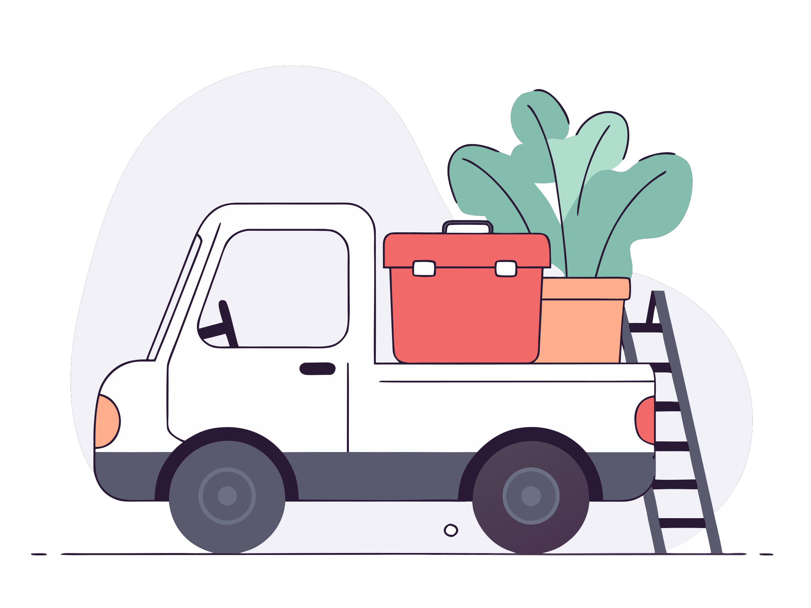
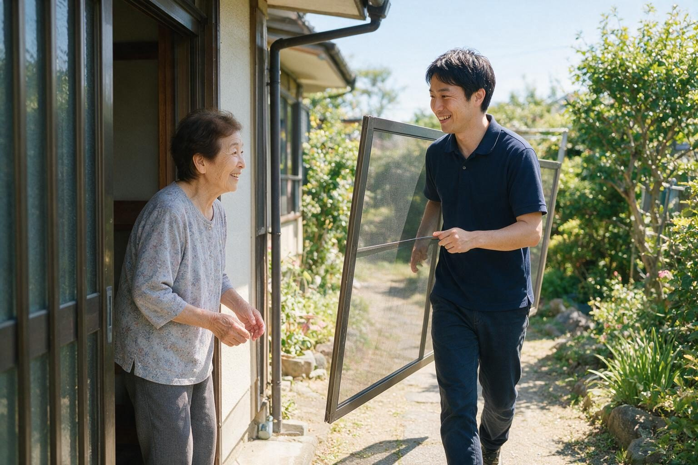

ご本人の方へ
電話が苦手でも、大丈夫です。ゆっくり伺います。
「名前と町と、困っていること」だけ教えてください。あとは、こちらから聞きます。
チラシをご覧になった方も、はじめての方も
電球の交換、草むしり、水まわり、庭木、片付け。「どこに頼めばいいんだろう」という家のことを、窓口ひとつでお受けします。作業は、逗子・鎌倉・葉山の地元の事業者が行います。

「チラシを見て」と、お電話ください。
お電話でも、Webでも、ご相談いただけます。LINEでも、お気軽にどうぞ。お電話に出られないときは、折り返します。
対象：逗子市・鎌倉市・葉山町のお住まい。初回のお電話でのご相談は、30分まで無料です。


家のこと、困っていませんか!?

その困りごと、Local Editが引き受けます！
電話一本で、困りごとを伺い、頼む先を探し、金額を先にお伝えします。小さなことほど、どうぞ。

ここに無いことも、まず、お聞かせください。
お電話でも、Webでも、ご相談いただけます。LINEでも、お気軽にどうぞ。お電話に出られないときは、折り返します。

電球ひとつ、網戸一枚。「こんなことで呼んでいいのかな」と思うことを、お受けするための窓口です。

水道屋さん、庭師さん、片付けの会社。どこに頼むかを探すのは、Local Editの仕事です。あなたの連絡先は、ひとつで済みます。

作業を始める前に、金額をお伝えします。ご納得いただいてから、日程を決めます。その場でお決めいただく必要はありません。
「電球が切れて」「庭が草だらけで」。ひとことで大丈夫です。お名前と、お住まいの町をお聞きします。
お電話に出られないときは、折り返します。状況を伺い、進め方をお伝えします。
写真で済むことは写真で。見ないと分からないことは、日程を決めてお伺いします。
作業は、逗子・鎌倉・葉山の地元の事業者が行います。終わったら、ご一緒に確認します。

作業の前に、金額をお伝えします。

「名前と町と、困っていること」だけで、始められます。
お電話でも、Webでも、ご相談いただけます。LINEでも、お気軽にどうぞ。お電話に出られないときは、折り返します。
電話が苦手でも、大丈夫です。ゆっくり伺います。
「名前と町と、困っていること」だけ教えてください。あとは、こちらから聞きます。

「実家の電球が切れたまま」「庭が荒れてきた」。親御さんの代わりのご相談も、お受けしています。
ご本人への連絡の仕方（電話の時間帯、玄関での名乗り方）は、先にご相談のうえで決めます。

暮らしの困りごと編集室Local Edit代表 鈴木隆文
代表から、ひとこと
「家のことを、誰に頼むか」は、長いあいだ、よそのお宅の話でした。
電球が切れた。草が伸びた。水がポタポタ落ちる。ひとつひとつは小さなことでも、「誰に」と考えると、つい後回しになる。そのたびに、近所に「まず聞ける人」がいてくれたら、と思いました。
Local Editは、その「誰に」を引き受ける窓口です。頼む先を探し、金額を先にお伝えし、終わるまでご一緒します。
逗子・鎌倉・葉山の家のことで困ったら、どうぞ電話をください。
気になることは、ここで!?
はい。小さなことほど、お電話ください。ついでに「ほかにも気になっていること」があれば、まとめて伺います。
無料なのは、初回のお電話でのご相談（30分まで）です。事業者の作業費・処分費と、「実家じまい まるごと相談」は有料で、金額は始める前にお伝えします。ご依頼が成約したとき、Local Editは事業者から紹介料を受け取ることがあります。
はい。作業を始める前に金額をお伝えし、ご納得いただいてから日程を決めます。お電話で、だいたいの範囲をお伝えできることもあります。
最初の電話と折り返しは代表の鈴木が行い、作業に伺う事業者の名前と人数を、前日までにお伝えします。ご家族の立ち会いや、ご家族への同時連絡も承ります。
はい。離れて暮らすご家族からのご相談もお受けしています。ご本人への連絡の仕方は、先にご相談のうえで決めます。
なくても大丈夫です。送る場合は、危険のない範囲で撮ったものをお使いください。写真には撮影場所などの情報が含まれる場合があります。写真は、ご相談への対応のためにだけ使い、事業者に見せるときは、先にご本人に確認します。
お預かりする氏名・電話番号・相談内容・写真は、ご相談への対応のために、運営するストーリーテリング合同会社が利用します。事業者への共有は、ご本人に確認のうえ、必要な範囲でのみ行います。詳しくは、プライバシーポリシーをご覧ください。
法律・税・登記・相続分の判断や助言はしません。一般的な情報の整理と、専門家に相談するときの材料づくりまでです。個別のことは、行政書士・司法書士・税理士・弁護士など、専門家にご相談ください。
対応地域はどこまで!?
対象は、逗子市・鎌倉市・葉山町にあるお住まいです。ご相談される方は、遠方にお住まいでもかまいません。


「こんなことで」と思うことほど、どうぞ。お名前と町と、困っていることだけ、教えてください。
お電話でも、Webでも、ご相談いただけます。LINEでも、お気軽にどうぞ。お電話に出られないときは、折り返します。
暮らしの困りごと編集室Local Edit